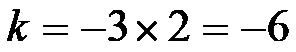
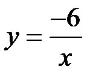
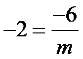
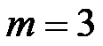

2023年北京中考数学 第12题 解析
12. 在平面直角坐标系 中，若函数
中，若函数 的图象经过点
的图象经过点 和
和 ，则m的值为______．
，则m的值为______．
【答案】3
【解析】
【分析】先把点A坐标代入求出反比例函数解析式，再把点B代入即可求出m的值．
【详解】解：∵函数的图象经过点和
∴把点代入得

，∴反比例函数解析式为

，把点代入得：

，解得：

，故答案为：3．
【点睛】本题考查了待定系数法求反比例函数解析式，反比例函数图象上点的坐标特征，熟知反比例函数图象上的点的坐标一定满足函数解析式是解题的关键．